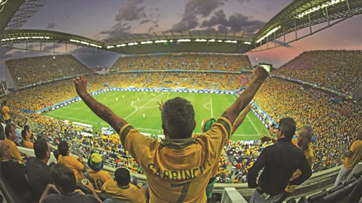

Rumo ao Palco Mundial: O Que Esperar do Brasil na Copa de 2026
O ciclo para a Copa do Mundo de 2026 traz um misto de nostalgia e renovação para o torcedor brasileiro.
Após anos de aprendizado, a Seleção Brasileira se prepara para desembarcar na América do Norte com um objetivo claro: resgatar a hegemonia que transformou o país na maior potência do futebol mundial.
A força da nossa camisa não vem apenas dos cinco troféus na estante, mas da capacidade única de produzir talentos que desafiam a lógica. Para este novo capítulo, o desafio é unir a experiência de nomes consolidados à ousadia de uma nova safra de craques que já brilha nos maiores estádios da Europa e do Brasil.

Mais do que tática e técnica, o que está em jogo em 2026 é a reconexão emocional com a torcida. O mundo espera pelo "Joga Bonito", e o Brasil entra no torneio com a missão de provar que a tradição ainda é o nosso combustível mais potente.
Fique ligado por aqui para acompanhar:
- Análise técnica dos convocados.
- Bastidores da preparação física e mental.
- Histórico de confrontos contra os principais rivais.
- Cobertura em tempo real dos momentos decisivos.